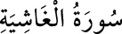

88- el-ĞÂŞİYE SÛRESİ
Adını, ilk âyette geçen ve her şeyi saran, kaplayan, dehşeti her şeye ulaşan kıyamet
günü anlamına gelen «gâşiye» kelimesinden alır. İlk gelen sûrelerden olup, Zâriyât
sûresinden sonra Mekke’de inmiştir. Bu sûrede kıyamet ve âhirete âid haberler
vardır. Ayrıca Allah’ın varlığını anlamaya yardım edecek bazı kevnî deliller
serdedilmiştir. Hayatın bir plan ve program içinde akıp gittiği, bu akışın sonunda
Allah’a varılacağı ve O’nun katında hesap verileceği anlatılır. 26 âyettir.